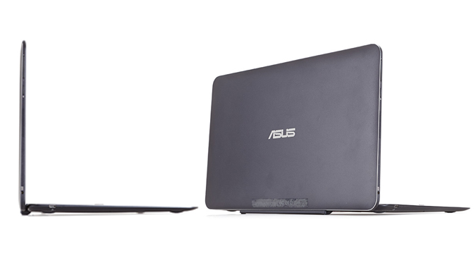
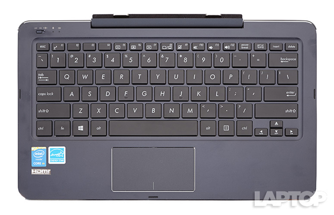
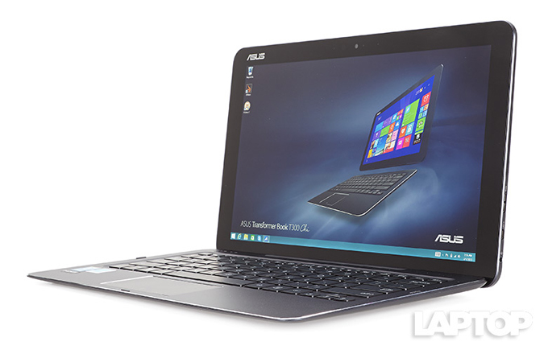
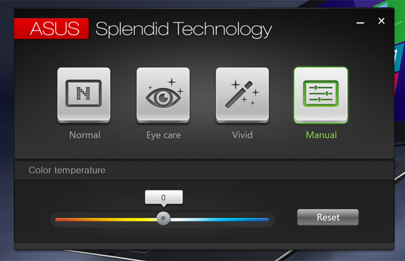
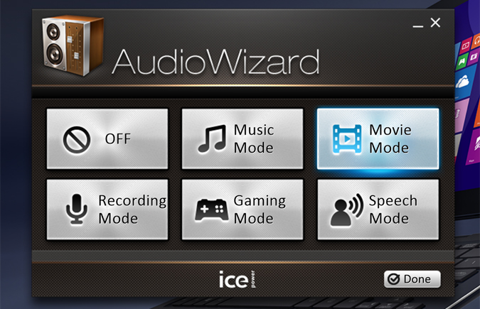

Attractive aluminum body; Detachable Bluetooth keyboard; Good performance; Bright display.
Weak battery life; Back of tablet runs hot; Poor audio; No full-size USB port.
The Asus Transformer Book T300 Chi is a sleek, stylish 2-in-1 for an aggressive price, but lackluster battery life holds it back.
The T300 Chi features a great-looking, all-metal treatment, similar to Asus' line of ZenBook ultraportable laptops. The T300 features a gorgeous, sapphire-blue paint job on its aluminum lid, accented by a silver Asus logo in the center. On the inside of the lid, another Asus logo hides in the top left, and a 2-megapixel webcam rests above the center of the display.
On the bottom of the device is the Chi's detachable Bluetooth keyboard, which connects to the display using magnets, and is aided by two metal tabs for increased stability. The keyboard continues the aluminum design with a metal deck and underside.
All of these design elements make it difficult to see where the tablet ends and the laptop begins. The keyboard's magnetic grip is pretty strong, too. You can even pick up the system by its display without worrying about the detachable keyboard falling off.
One of the best things about the T300 Chi is its detachable Bluetooth keyboard. Its keys have a nice feel, with an actuation weight of 67 grams and 1.3 millimeters of travel distance. This let me hit 84 words per minute with just one error on my second run on 10fastfingers.com, which is higher than my typical average of 75 to 80 wpm.
At just 3.4 x 1.8 inches, the one-piece touchpad feels a little on the small side, but its supersmooth surface responded quickly to the touch. Gestures such as two-finger scrolling and pinch-to-zoom were similarly quick. I just wish there was a tiny bit more room to work with. Another minor complaint is that after I left the system alone for a bit, there was a short delay before the keyboard woke up and started working again.
For instance, to charge your iPhone using the MacBook or to plug in a camera, you'll need to purchase a $19 USB-C-to-USB adapter. This adapter occupies the laptop's lone port, so you won't be able to juice the laptop with that dongle plugged in. A separate $79 USB-C Digital AV Multiport Adapter lets you connect an external display, USB device and the MacBook's USB-C power cable simultaneously. When I'm already paying $1,299, I shouldn't have to spend an extra $79 to charge my laptop and plug in another gadget at the same time.
Our top-end $899 review model features a 12.5-inch 2560 x 1440-pixel quad-HD display. (A $699 model with a 1080p touch screen is also available.) The saturated colors of the display made the Windows Start menu pop with vivid, colorful live tiles. However, when I watched the trailer for Spectre, the reddish tint of the panel made it look like Daniel Craig had gout.
The T300 Chi's color range is also good, with the T300 Chi recreating 115 percent of the sRGB spectrum. That's higher than the Surface Pro 3 (97 percent), Spectre x360 (103.2 percent), UX 305 (93.9 percent) and Yoga Tablet 2 13 (72.8 percent).
Asus also includes its Splendid display software, which offers presets for Normal, Eye Care and Vivid, as well as a manual mode for customizing the color temperature. Don't even bother with Vivid mode, which can make colorful scenes look cartoonish.
The T300 Chi features stereo SonicMaster speakers located on the left and right edges of the device. Even at its best, the T300 sounds muddy, with messy, tinny highs; garbled mids; and almost no bass. When I listened to Empire of the Sun's "DNA," it sounded like I was listening to the music from the other end of a walkie-talkie.
The T300 Chi is an attractive and power-packed 2-in-1 that doesn't quite manage to bridge the gap between tablets and laptops. I love the gorgeous all-aluminum design and responsive detachable keyboard, but its relatively short battery life and heat management give me pause.
At $899, the Transformer Book T300 Chi costs just $100 less than the HP Spectre X360, which offers better overall performance, an equally beautiful design and an extra 4 hours of battery life. If you want to stick with Asus, the $699 configuration of the T300 Chi looks like a better deal, as its less-demanding 1080p screen likely uses less power.